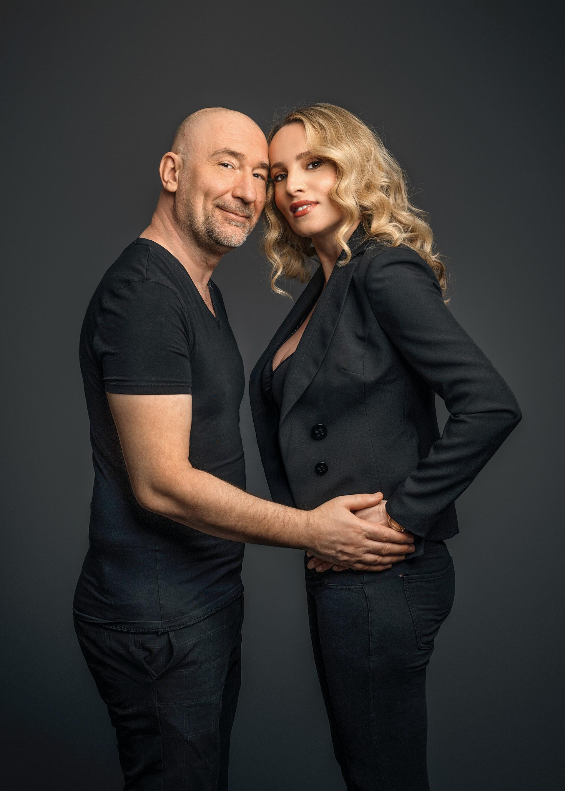

Boris Đurđević rođen je 15. ožujka 1973. u Vinkovcima, gradu čije je rimsko ime kasnije dao svojoj najpoznatijoj grupi. Elektroničku plesnu glazbu slušao je od početka osamdesetih, a prvi bendovi koje je zavolio bili su Kraftwerk, Depeche Mode, Yazoo, Erasure i Jean-Michel Jarre. Krajem osamdesetih počeo je skladati i programirati prve pjesme, a istodobno je počeo raditi kao DJ po slavonskim klubovima. Osnove solfeđa i harmonije naučio je sam. U djetinjstvu je bio prvak grada i županije u stolnom tenisu, dok glazba sport nije potisnula u drugi plan.
Prvi sastav, MC New Beat, osnovao je 1988. sa školskim društvom, a uz računalo i klavijature skladao je rap pjesme angažiranih tekstova. Krajem osamdesetih i početkom devedesetih s dva najbolja prijatelja osnovao je sastav CBA, kratica za Croatia Boys Attack, i snimio pet disco demosnimki. Ostale su neobjavljene jer je disco izašao iz mode i nastupilo je vrijeme housea. Te su snimke privukle pažnju vinkovačkog strip-crtača i frontmena grupe Septica Dubravka Matakovića, koji je kasnije s bendom obradio Borisovu pjesmu "Perin duh". Zbog rata u rodnim Vinkovcima maturirao je u Zagrebu i upisao agronomiju, no studij ga nije zanimao pa ga je ubrzo napustio.
Krajem 1993. počeo je raditi kao DJ i producent na vinkovačkom radiju VFM. Ondje je upoznao Tomislava Jelića, zvanog Kameni, a ubrzo i Indiru Vladić. Indira je tada radila kao referentica u Županji, svirala je klarinet u limenoj glazbi i pjevala na svadbama. Boris i Tomislav bili su radijski voditelji i producenti, a Indira im je pjevala vokale u reklamama i džinglovima. Anegdota koja se često prepričava kaže da je Indiru zapazio na jednoj svadbi i na jednom pogrebu.
Grupa je ime Colonia dobila po rimskom nazivu Vinkovaca, Colonia Aurelia Cibalae. Prvi singl, "Nek vatre gore sve", snimljen je 1996. u studiju izdavačke kuće Crno-bijeli svijet, uz producenta Gojka Tomljanovića i Fedora Boića. Sljedeći singl, "Sve oko mene je grijeh", postao je hit na hrvatskim ljestvicama, a debitantski album "Vatra i led" izašao je 1997. i prodan u više od 40 tisuća primjeraka. Podjela poslova bila je jasna. Boris je pisao glazbu i tekstove te radio aranžmane i studijsku produkciju, a Tomislav je uz Indiru radio kao menadžer, vozač i DJ.
Uslijedili su albumi "Ritam ljubavi" (1999.), "Jača nego ikad" (2000.), "Milijun milja od nigdje" (2001.), "Izgubljeni svijet" (2002.) i "Dolazi oluja" (2003.). Hrvatski tekst za "Za tvoje snene oči" Boris je napisao za dvadesetak minuta, na putu od kuće do studija. Talijanske uzvike snimio je Nenad Ćirjak, po uzoru na klupske DJ-eve animatore koje je čuo obilazeći talijanske klubove. Pjesma je osvojila Grand Prix Hrvatskog radijskog festivala i postala najslušanija pjesma 2001. Iste godine dobila je i prvu nagradu Eurodanceweb. "Oduzimaš mi dah" donijela je grupi Grand Prix 2002. i proglašena je najizvođenijom pjesmom godine, a "C'est la vie" osigurala joj je treći Grand Prix 2003.

Albumi "Milijun milja od nigdje" i "Izgubljeni svijet" izdani su u Češkoj i Slovačkoj, gdje je Colonia postala jedna od najpopularnijih grupa. U siječnju 2004. izašla je engleska verzija pjesme "Za tvoje snene oči" pod naslovom "A Little Bit of Uh La La", s tekstom Mary Susan Applegate. Japanski sastav Kinki Kids snimio je vlastitu verziju pjesme "Deja Vu", koja se dugo zadržala pri vrhu japanskih ljestvica.
Za televiziju je skladao špice za Big Brother (od prve do pete sezone i Celebrity Big Brother), Fear Factor, Exploziv i Bibin svijet na RTL-u, za Farmu i Showtime na Novoj TV te za slovenski Kanal A. Naslovnu špicu i glazbu za seriju "Zlatni dvori" također je napisao on. Njegova glazba prati i reklame za Cedevitu, DM, Mercator, Volkswagen, Vindiju i Hyundai. Napisao je pjesmu "Treba mi snage za kraj" za Žanamari, pobjednicu prvog Hrvatskog Idola. Producirao je prvi album Saše, Tina i Kedže i napisao im hitove "365", "Ništa ili sve" i "Neodoljivo". Surađivao je i s Tonyjem Cetinskim, Lanom Jurčević, Jelenom Rozgom, Dinom Dvornikom, Jacquesom Houdekom, Frankom Batelić i Meri Andraković.
Na Dori 2011. pobijedila je njegova pjesma "Lahor" u izvedbi Darie Kinzer. Boris ju je napisao s Andreom Čubrić, a engleska verzija "Celebrate", čiji je tekst potpisao zajedno s Marinom Mudrinić, nastupila je na Eurosongu u Düsseldorfu i u polufinalu završila petnaesta.
Kao DJ i producent poznat je i pod pseudonimom Eric Destler, koji je preuzeo od lika iz svog omiljenog mjuzikla "Fantom u operi". S prijateljem Damirom Gomuzakom, poznatim kao D and G, radio je remikse za izvođače poput Votchika i Davida Puentza. Singlovi "On Fire" (2011.) i "Run" (2012.), koje je snimio s Frankom Batelić, izašli su za Kontor Records, a spot za "On Fire" ubrzo je prešao dva milijuna pregleda na YouTubeu.
Od 2012. do 2015. bio je predsjednik nadzornog odbora Hrvatskog društva skladatelja. Tomislav Jelić napustio je grupu 2014., a Boris i Indira nastavili su raditi. Dvadeset godina postojanja Colonia je 2016. obilježila velikim koncertom u Domu sportova. U svibnju 2017. Indira je najavila odlazak zbog solo karijere, a u grupi je došlo i do poslovnog i kreativnog razilaženja. Za novu pjevačicu Boris se odlučio po intuiciji, bez audicija, iako su mu stizale preporuke, tridesetak do četrdesetak njih. Ivana Lovrić tada je pisala diplomski rad na studiju elektrotehnike. Javnosti je službeno predstavljena u lipnju 2017. S njom su nastali hitovi "Zadnja suza", "Maskenbal", "Que sera", "Alarmantno", "Ljetni dan" i "Doza", a 2022. grupa je otišla na koncertnu turneju u Australiju.
U srpnju 2021., četiri godine nakon razlaza, Boris i Indira objavili su da ponovno surađuju. Pjesma "Atlantida" bila je prva koju su potpisali zajedno kao suradnici, izvan benda. Godine 2023. Boris je skladatelju Adonisu Ćulibrku predložio ponovno okupljanje grupe E.T. s Meri Andraković kao novom vokalisticom
Na 73. Zagrebačkom festivalu Colonia je 17. travnja 2026. u Mozaik event centru izvela pjesmu "Još malo", svoj četvrti nastup na tom festivalu. Boris kaže da je melodiju imao na demokaseti iz 1992. godine. Uz moderan aranžman i tekst koji mu je došao odmah, pjesma je nastala za jedno popodne. Kad govori o dance pjesmama, ističe da melodija mora biti zarazna, ne prekomplicirana, ali ni banalna, a produkcijski je uvijek želio zvuk koji može stati uz svjetske ljestvice. I danas radi plesnu i pop glazbu, jer se, kako sam kaže, ne može odvojiti od ritma u sebi. Ivana Lovrić je u travnju rekla da grupa ima pjesama za cijeli novi album, ali da ništa ne obećavaju dok ne budu sigurni.